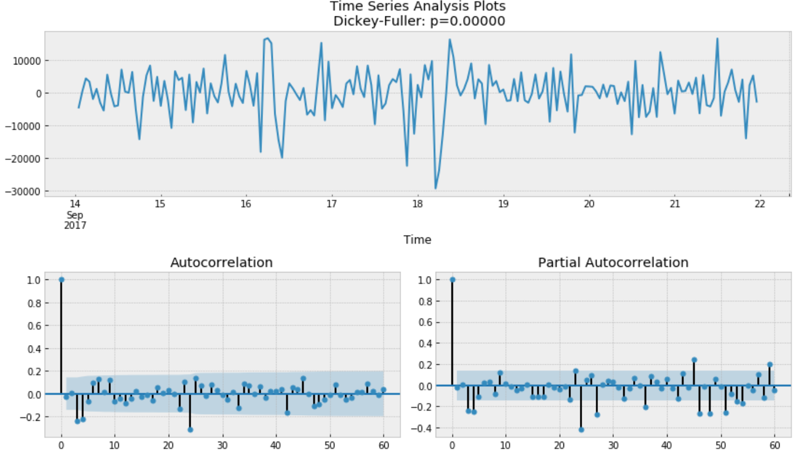
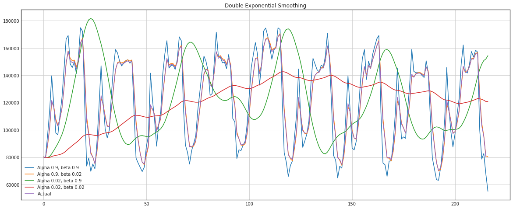

Tips & Tricks
Heatmap for Daily usage
Code
# ----------------------------------------------------------------------------
# Author: Nicolas P. Rougier
# License: BSD
# ----------------------------------------------------------------------------
import numpy as np
import matplotlib.pyplot as plt
from matplotlib.patches import Polygon
from datetime import datetime
from dateutil.relativedelta import relativedelta
def calmap(ax, year, data):
ax.tick_params('x', length=0, labelsize="medium", which='major')
ax.tick_params('y', length=0, labelsize="x-small", which='major')
# Month borders
xticks, labels = [], []
start = datetime(year,1,1).weekday()
for month in range(1,13):
first = datetime(year, month, 1)
last = first + relativedelta(months=1, days=-1)
y0 = first.weekday()
y1 = last.weekday()
x0 = (int(first.strftime("%j"))+start-1)//7
x1 = (int(last.strftime("%j"))+start-1)//7
P = [ (x0, y0), (x0, 7), (x1, 7),
(x1, y1+1), (x1+1, y1+1), (x1+1, 0),
(x0+1, 0), (x0+1, y0) ]
xticks.append(x0 +(x1-x0+1)/2)
labels.append(first.strftime("%b"))
poly = Polygon(P, edgecolor="black", facecolor="None",
linewidth=1, zorder=20, clip_on=False)
ax.add_artist(poly)
ax.set_xticks(xticks)
ax.set_xticklabels(labels)
ax.set_yticks(0.5 + np.arange(7))
ax.set_yticklabels(["Mon", "Tue", "Wed", "Thu", "Fri", "Sat", "Sun"])
ax.set_title("{}".format(year), weight="semibold")
# Clearing first and last day from the data
valid = datetime(year, 1, 1).weekday()
data[:valid,0] = np.nan
valid = datetime(year, 12, 31).weekday()
# data[:,x1+1:] = np.nan
data[valid+1:,x1] = np.nan
# Showing data
ax.imshow(data, extent=[0,53,0,7], zorder=10, vmin=-1, vmax=1,
cmap="RdYlBu_r", origin="lower", alpha=.75)
Upsampling
Upsampling Chaning the time from, for example, minutes to seconds.
Upsampling helps us to visualize and analyze data in more detail, and these fine-grained observations are calculated using interpolation.
Pitfalls:
Upsampling leads to NaN values. the methods used in interpolation are linear or cubic splines for imputing NaN values. This might not represent the original data, so the analysis & visualization might be misleading.# Aggregate dataframe by year since we have a yearly time-series dataframe.
walmart_store_count = walmart_stores.groupby("YEAR")[["storenum"]].agg("count").rename(columns={"storenum": "store_count"})
# Convert the frequecy to 2 days (Upsampling):
walmart_store_count_series = walmart_store_count_series.asfreq('2D')
# And this will generated NaNs, and we will fill it with interpolation.
# Imputing NaNs with interpolation.
walmart_store_count_series = walmart_store_count_series.interpolate(method="spline", order=2)
# Then plot it.
walmart_store_count_series.plot(style=":")

Downsampling
Downsampling Chaning the time from, for example, months to years.
Downsampling helps summarize and get a general sense of trends in data.
Pitfalls:
Downsampling aggregates the observation over sample frequency, where we provide a frequency to function as an argument, so we might lose information.# After aggreation, we will smooth out the plot using downsampling with a frequency of BA(business year).
plt.figure(figsize=(12, 8))
plt.ylabel("Interpolated Values")
plt.plot(walmart_store_count_series)
walmart_store_count_series.resample('BA').mean().plot(style=':', title="Values Smoothen by Business Year Frequency") #BA stands for Business Year

# Downsample with a frequency of BQ(business quarter) to observe higher granularity.
plt.figure(figsize=(12,8))
plt.ylabel("Interpolated Values")
walmart_store_count_series.plot(alpha=0.5, style='-')
walmart_store_count_series.resample('BQ').mean().plot(style=':', title="Values Smoothen by Business Quarter Frequency")#BQ stands for Business quarter

Autocorrelation, Partial Autocorrelation, other in one plot
def tsplot(y, lags=None, figsize=(10, 8), style='bmh',title=''):
if not isinstance(y, pd.Series):
y = pd.Series(y)
with plt.style.context(style):
fig = plt.figure(figsize=figsize)
#mpl.rcParams['font.family'] = 'Ubuntu Mono'
layout = (3, 2)
ts_ax = plt.subplot2grid(layout, (0, 0), colspan=2)
acf_ax = plt.subplot2grid(layout, (1, 0))
pacf_ax = plt.subplot2grid(layout, (1, 1))
qq_ax = plt.subplot2grid(layout, (2, 0))
pp_ax = plt.subplot2grid(layout, (2, 1))
y.plot(ax=ts_ax)
p_value = sm.tsa.stattools.adfuller(y)[1]
ts_ax.set_title('{}\n Dickey-Fuller: p={0:.5f}'.format(title, p_value))
smt.graphics.plot_acf(y, lags=lags, ax=acf_ax, alpha=0.5)
smt.graphics.plot_pacf(y, lags=lags, ax=pacf_ax, alpha=0.5)
sm.qqplot(y, line='s', ax=qq_ax)
qq_ax.set_title('QQ Plot')
scs.probplot(y, sparams=(y.mean(), y.std()), plot=pp_ax)
plt.tight_layout()
return # Simulate an AR(1) process with alpha = 0.6
np.random.seed(1)
n_samples = int(1000)
a = 0.6
x = w = np.random.normal(size=n_samples)
for t in range(n_samples):
x[t] = a*x[t-1] + w[t]
limit=12
_ = tsplot(x, lags=limit,title="AR(1)process")How to analyize ACF:

plot the missing nan values
f, ax = plt.subplots(nrows=1, ncols=1, figsize=(15, 15))
old_hydrometry = df['river_hydrometry'].copy()
df['river_hydrometry'] = df['river_hydrometry'].replace(0, np.nan)
sns.lineplot(x=df['date'], y=old_hydrometry, ax=ax[0], color='darkorange', label='original')
sns.lineplot(x=df['date'], y=df['river_hydrometry'].fillna(np.inf), ax=ax[0], color='dodgerblue', label='modified')
ax[0].set_title('Feature: Hydrometry', fontsize=14)
ax[0].set_ylabel(ylabel='Hydrometry', fontsize=14)
ax[0].set_xlim([date(2009, 1, 1), date(2020, 6, 30)])plot Train/Test data for each fold
from sklearn.model_selection import TimeSeriesSplit
N_SPLITS = 3
X = df['date']
y = df['depth_to_groundwater']
folds = TimeSeriesSplit(n_splits=N_SPLITS)f, ax = plt.subplots(nrows=N_SPLITS, ncols=2, figsize=(16, 9))
for i, (train_index, valid_index) in enumerate(folds.split(X)):
X_train, X_valid = X[train_index], X[valid_index]
y_train, y_valid = y[train_index], y[valid_index]
sns.lineplot(
x=X_train,
y=y_train,
ax=ax[i,0],
color='dodgerblue',
label='train'
)
sns.lineplot(
x=X_train[len(X_train) - len(X_valid):(len(X_train) - len(X_valid) + len(X_valid))],
y=y_train[len(X_train) - len(X_valid):(len(X_train) - len(X_valid) + len(X_valid))],
ax=ax[i,1],
color='dodgerblue',
label='train'
)
for j in range(2):
sns.lineplot(x= X_valid, y= y_valid, ax=ax[i, j], color='darkorange', label='validation')
ax[i, 0].set_title(f"Rolling Window with Adjusting Training Size (Split {i+1})", fontsize=16)
ax[i, 1].set_title(f"Rolling Window with Constant Training Size (Split {i+1})", fontsize=16)
for i in range(N_SPLITS):
ax[i, 0].set_xlim([date(2009, 1, 1), date(2020, 6, 30)])
ax[i, 1].set_xlim([date(2009, 1, 1), date(2020, 6, 30)])
plt.tight_layout()
plt.show()plot options of filling missing values
f, ax = plt.subplots(nrows=4, ncols=1, figsize=(15, 12))
sns.lineplot(x=df['date'], y=df['drainage_volume'].fillna(0), ax=ax[0], color='darkorange', label = 'modified')
sns.lineplot(x=df['date'], y=df['drainage_volume'].fillna(np.inf), ax=ax[0], color='dodgerblue', label = 'original')
ax[0].set_title('Fill NaN with 0', fontsize=14)
ax[0].set_ylabel(ylabel='Volume C10 Petrignano', fontsize=14)
mean_drainage = df['drainage_volume'].mean()
sns.lineplot(x=df['date'], y=df['drainage_volume'].fillna(mean_drainage), ax=ax[1], color='darkorange', label = 'modified')
sns.lineplot(x=df['date'], y=df['drainage_volume'].fillna(np.inf), ax=ax[1], color='dodgerblue', label = 'original')
ax[1].set_title(f'Fill NaN with Mean Value ({mean_drainage:.0f})', fontsize=14)
ax[1].set_ylabel(ylabel='Volume C10 Petrignano', fontsize=14)
sns.lineplot(x=df['date'], y=df['drainage_volume'].ffill(), ax=ax[2], color='darkorange', label = 'modified')
sns.lineplot(x=df['date'], y=df['drainage_volume'].fillna(np.inf), ax=ax[2], color='dodgerblue', label = 'original')
ax[2].set_title(f'FFill', fontsize=14)
ax[2].set_ylabel(ylabel='Volume C10 Petrignano', fontsize=14)
sns.lineplot(x=df['date'], y=df['drainage_volume'].interpolate(), ax=ax[3], color='darkorange', label = 'modified')
sns.lineplot(x=df['date'], y=df['drainage_volume'].fillna(np.inf), ax=ax[3], color='dodgerblue', label = 'original')
ax[3].set_title(f'Interpolate', fontsize=14)
ax[3].set_ylabel(ylabel='Volume C10 Petrignano', fontsize=14)
for i in range(4):
ax[i].set_xlim([date(2019, 5, 1), date(2019, 10, 1)])
plt.tight_layout()
plt.show()Time-Series Analysis Course
-
Statsmodel for Time-Series Analysis
Finance
-
Change percent
google['Change'] = google.High.div(google.High.shift()) google['Change'].plot(figsize=(20,8))
-
Stock Returns
google['Return'] = google.Change.sub(1).mul(100) google['Return'].plot(figsize=(20,8)) google.High.pct_change().mul(100).plot(figsize=(20,6)) # Another way to calculate returns
-
Absolute Changes in successive days
google.High.diff().plot(figsize=(20,6)) -
Comparing 2 or more time series
We will compare 2 time series by normalizing them. This is achieved by dividing each time series element of all time series by the first element.
This way both series start at the same point and can be easily compared.# Normalizing and comparison # Both stocks start from 100 normalized_google = google.High.div(google.High.iloc[0]).mul(100) normalized_microsoft = microsoft.High.div(microsoft.High.iloc[0]).mul(100) normalized_google.plot() normalized_microsoft.plot() plt.legend(['Google','Microsoft']) plt.show() # You can clearly see how google outperforms microsoft over time.
-
Window Functions rolling, exapnding
In rolling function the window size remain constant whereas in the expanding function it changes.
# Rolling window functions rolling_google = google.High.rolling('90D').mean() google.High.plot() rolling_google.plot() plt.legend(['High','Rolling Mean']) # Plotting a rolling mean of 90 day window with original High attribute of google stocks plt.show()# Expanding window functions microsoft_mean = microsoft.High.expanding().mean() microsoft_std = microsoft.High.expanding().std() microsoft.High.plot() microsoft_mean.plot() microsoft_std.plot() plt.legend(['High','Expanding Mean','Expanding Standard Deviation']) plt.show()
-
OHLC charts
from plotly.offline import init_notebook_mode, iplot init_notebook_mode(connected=True) import plotly.graph_objs as go # OHLC chart of June 2008 trace = go.Ohlc(x=google['06-2008'].index, open=google['06-2008'].Open, high=google['06-2008'].High, low=google['06-2008'].Low, close=google['06-2008'].Close) data = [trace] iplot(data, filename='simple_ohlc') -
Candle charts
from plotly.offline import init_notebook_mode, iplot init_notebook_mode(connected=True) import plotly.graph_objs as go # Candlestick chart of march 2008 trace = go.Candlestick(x=google['03-2008'].index, open=google['03-2008'].Open, high=google['03-2008'].High, low=google['03-2008'].Low, close=google['03-2008'].Close) data = [trace] iplot(data, filename='simple_candlestick')
-
Different Moving Averages with close price
# Moving Averages (10, 50 and 200) amzn_df['10_d_avg'] = amzn_df.close.rolling(window=10).mean() amzn_df['50_d_avg'] = amzn_df.close.rolling(window=50).mean() amzn_df['200_d_avg'] = amzn_df.close.rolling(window=200).mean() close_p = amzn_df['close'].values.tolist() # Variables to insert into plotly ten_d = amzn_df['10_d_avg'].values.tolist() fifty_d = amzn_df['50_d_avg'].values.tolist() twoh_d = amzn_df['200_d_avg'].values.tolist() date = amzn_df['date'].values.tolist() # Set date as index amzn_df = amzn_df.set_index('date'))import plotly.tools as tls from plotly.offline import download_plotlyjs, init_notebook_mode, plot, iplot init_notebook_mode(connected=True) fig = tls.make_subplots(rows=2, cols=1, shared_xaxes=True) colors = ['#ff4500', '#92a1cf', '#6E6E6E'] avgs = ['10_d_avg', '50_d_avg', '200_d_avg'] for col, c in zip(avgs, colors): fig.append_trace({'x': amzn_df.index, 'y': amzn_df[col], 'type': 'scatter', 'name': col, 'line': {'color': c}}, 1, 1) for col in ['close']: fig.append_trace({'x': amzn_df.index, 'y': amzn_df[col], 'type': 'scatter', 'name': 'Closing Price', 'line':{'color': '#01DF3A'}}, 2, 1) fig['layout'].update(height=800,title='Relationship between MAs
and Closing Price', paper_bgcolor='#F2DFCE', plot_bgcolor='#F2DFCE') iplot(fig, filename='pandas/mixed-type subplots')
Tests
-
Autocorrelation
The autocorrelation function (ACF) measures how a series is correlated with itself at different lags.
In any case, given a lag, a large absolute autocorrelation means that the process tends to maintain an internal similarity, while a small value indicates that the evolution has removed most of the memory. In terms of prediction, a large autocorrelation implies a simple prediction given the preceding instants, while a small autocorrelation (as in the case of the noise process) informs us that the value yt receives a very small influence from the previous values (that is, in a white noise process the outputs are uncorrelated; therefore, the prediction is theoretically impossible).
Helps determine the order of MA.
ACF - PACF - Autocorrelations - more
statsmodels
from statsmodels.graphics.tsaplots import plot_acf, plot_pacf # Autocorrelation of humidity of San Diego plot_acf(humidity["San Diego"], lags=25, title="San Diego") plt.show() # As all lags are either close to 1 or at least greater than the confidence interval, they are statistically significant.
How to analyize ACF:
pandas
from random import seed from random import random from matplotlib import pyplot from pandas.plotting import autocorrelation_plot seed(1) random_walk = list() random_walk.append(-1 if random() < 0.5 else 1) for i in range(1, 1000): movement = -1 if random() < 0.5 else 1 value = random_walk[i-1] + movement random_walk.append(value) autocorrelation_plot(random_walk) pyplot.show()How to interpret Autocorrelation
Perfect time-series data to ready to predict

-
Partial Autocorrelation
The partial autocorrelation function can be interpreted as a regression of the series against its past lags.
The terms can be interpreted the same way as a standard linear regression, that is the contribution of a change in that particular lag while holding others constant.We can drive the order of autoregression for the seasonal component of the model, using PACF. But you need to look at the number of significant lags, which are the multiples of the season period length. For example, if the period equals 24 and we see the 24-th and 48-th lags are significant in the PACF, that means the initial P should be 2.
ACF - PACF - Autocorrelations - more
from statsmodels.graphics.tsaplots import plot_acf, plot_pacf # Partial Autocorrelation of humidity of San Diego plot_pacf(humidity["San Diego"],lags=25) plt.show() # Though it is statistically signficant, partial autocorrelation after first 2 lags is very low.
-
ETS Decomposition
Classic seasonal_decompose()
These are the components of a time series Trend - Consistent upwards or downwards slope of a time series Seasonality - Clear periodic pattern of a time series(like sine funtion) Noise - Outliers or missing valuesimport statsmodels.api as sm # Now, for decomposition... rcParams['figure.figsize'] = 11, 9 decomposed_google_volume = sm.tsa.seasonal_decompose(google["High"],freq=360) # The frequncy is annual figure = decomposed_google_volume.plot() plt.show() # There is clearly an upward trend in the above plot. # You can also see the uniform seasonal change. # Non-uniform noise that represent outliers and missing values
Additive seasonal_decompose()
# Additive model res = sm.tsa.seasonal_decompose(ts.values,freq=12,model="additive") #plt.figure(figsize=(16,12)) fig = res.plot() #fig.show()
Multiplictive seasonal_decompose()
import statsmodels.api as sm # multiplicative res = sm.tsa.seasonal_decompose(ts.values,freq=12,model="multiplicative") #plt.figure(figsize=(16,12)) fig = res.plot() #fig.show()
STL
The STL approach to time series decomposition has the following advantages over the X11 aproach:
It handles any type of seasonality.
The user can control the rate of change of the seasonal component.
It is robust to outliers.We can change the smoothness of the trend-cycle and the seasonal components by passing an integer into the trend and seasonal arguments in the STL function. The seasonal argument is set to 7 by default (it is also recommended that you use a seasonal smoother greater than or equal to 7).
The choice of the seasonal smoother is up to you. The larger is the integer, the more ‘smooth’ your seasonal component becomes. This causes less of the variation in your data to be attributed to its seasonal component. Thus, you must decide how much variation in your data can be reasonably attributed to the seasonal component.
from statsmodels.tsa.seasonal import STL import matplotlib.pyplot as plt import pandas as pd df = df[:len(df) - 1] # Removes the last row in the data set columns = ['Month', 'Passengers'] df.columns = columns df.head() df = df.set_index('Month') # Set the index to datetime object. df = df.asfreq('MS') # Set frequency # Set robust to True to handle outliers res = STL(df, robust = True).fit() res.plot() plt.show()
Smoothing
-
Moving Average
def plotMovingAverage(series, window, plot_intervals=False, scale=1.96, plot_anomalies=False): """ series - dataframe with timeseries window - rolling window size plot_intervals - show confidence intervals plot_anomalies - show anomalies """ rolling_mean = series.rolling(window=window).mean() plt.figure(figsize=(15,5)) plt.title("Moving average\n window size = {}".format(window)) plt.plot(rolling_mean, "g", label="Rolling mean trend") # Plot confidence intervals for smoothed values if plot_intervals: mae = mean_absolute_error(series[window:], rolling_mean[window:]) deviation = np.std(series[window:] - rolling_mean[window:]) lower_bond = rolling_mean - (mae + scale * deviation) upper_bond = rolling_mean + (mae + scale * deviation) plt.plot(upper_bond, "r--", label="Upper Bond / Lower Bond") plt.plot(lower_bond, "r--") # Having the intervals, find abnormal values if plot_anomalies: anomalies = pd.DataFrame(index=series.index, columns=series.columns) anomalies[series -
Exponential smoothing
y^t=α⋅yt+(1−α)⋅y^t−1
Here the model value is a weighted average between the current true value and the previous model values. The α weight is called a smoothing factor. It defines how quickly we will "forget" the last available true observation. The smaller α is, the more influence the previous observations have and the smoother the series is.
def exponential_smoothing(series, alpha): """ series - dataset with timestamps alpha - float [0.0, 1.0], smoothing parameter """ result = [series[0]] # first value is same as series for n in range(1, len(series)): result.append(alpha * series[n] + (1 - alpha) * result[n-1]) return resultdef plotExponentialSmoothing(series, alphas): """ Plots exponential smoothing with different alphas series - dataset with timestamps alphas - list of floats, smoothing parameters """ with plt.style.context('seaborn-white'): plt.figure(figsize=(15, 7)) for alpha in alphas: plt.plot(exponential_smoothing(series, alpha), label="Alpha {}".format(alpha)) plt.plot(series.values, "c", label = "Actual") plt.legend(loc="best") plt.axis('tight') plt.title("Exponential Smoothing") plt.grid(True); plotExponentialSmoothing(ads.Ads, [0.3, 0.05]) -
Double Exponential Smoothing
Series decomposition will help us -- we obtain two components: intercept (i.e. level) ℓ and slope (i.e. trend) b . We have learnt to predict intercept (or expected series value) with our previous methods; now, we will apply the same exponential smoothing to the trend by assuming that the future direction of the time series changes depends on the previous weighted changes. As a result, we get the following set of functions:
ℓx=αyx+(1−α)(ℓx−1+bx−1)
bx=β(ℓx−ℓx−1)+(1−β)bx−1
y^x+1=ℓx+bxThe first one describes the intercept, which, as before, depends on the current value of the series. The second term is now split into previous values of the level and of the trend. The second function describes the trend, which depends on the level changes at the current step and on the previous value of the trend. In this case, the β coefficient is a weight for exponential smoothing. The final prediction is the sum of the model values of the intercept and trend.
def double_exponential_smoothing(series, alpha, beta): """ series - dataset with timeseries alpha - float [0.0, 1.0], smoothing parameter for level beta - float [0.0, 1.0], smoothing parameter for trend """ # first value is same as series result = [series[0]] for n in range(1, len(series)+1): if n == 1: level, trend = series[0], series[1] - series[0] if n >= len(series): # forecasting value = result[-1] else: value = series[n] last_level, level = level, alpha*value + (1-alpha)*(level+trend) trend = beta*(level-last_level) + (1-beta)*trend result.append(level+trend) return result
def plotDoubleExponentialSmoothing(series, alphas, betas): """ Plots double exponential smoothing with different alphas and betas series - dataset with timestamps alphas - list of floats, smoothing parameters for level betas - list of floats, smoothing parameters for trend """ with plt.style.context('seaborn-white'): plt.figure(figsize=(20, 8)) for alpha in alphas: for beta in betas: plt.plot(double_exponential_smoothing(series, alpha, beta), label="Alpha {}, beta {}".format(alpha, beta)) plt.plot(series.values, label = "Actual") plt.legend(loc="best") plt.axis('tight') plt.title("Double Exponential Smoothing") plt.grid(True) plotDoubleExponentialSmoothing(ads.Ads, alphas=[0.9, 0.02], betas=[0.9, 0.02]) -
Exponential smoothing
As you could have guessed, the idea is to add a third component - seasonality. This means that we should not use this method if our time series is not expected to have seasonality. Seasonal components in the model will explain repeated variations around intercept and trend, and it will be specified by the length of the season, in other words by the period after which the variations repeat. For each observation in the season, there is a separate component; for example, if the length of the season is 7 days (a weekly seasonality), we will have 7 seasonal components, one for each day of the week.
ℓx=α(yx−sx−L)+(1−α)(ℓx−1+bx−1)
bx=β(ℓx−ℓx−1)+(1−β)bx−1
sx=γ(yx−ℓx)+(1−γ)sx−L
y^x+m=ℓx+mbx+sx−L+1+(m−1)modLThe intercept now depends on the current value of the series minus any corresponding seasonal component. Trend remains unchanged, and the seasonal component depends on the current value of the series minus the intercept and on the previous value of the component. Take into account that the component is smoothed through all the available seasons; for example, if we have a Monday component, then it will only be averaged with other Mondays.
HoltWinters Class
class HoltWinters: """ Holt-Winters model with the anomalies detection using Brutlag method # series - initial time series # slen - length of a season # alpha, beta, gamma - Holt-Winters model coefficients # n_preds - predictions horizon # scaling_factor - sets the width of the confidence interval by Brutlag (usually takes values from 2 to 3) """ def __init__(self, series, slen, alpha, beta, gamma, n_preds, scaling_factor=1.96): self.series = series self.slen = slen self.alpha = alpha self.beta = beta self.gamma = gamma self.n_preds = n_preds self.scaling_factor = scaling_factor def initial_trend(self): sum = 0.0 for i in range(self.slen): sum += float(self.series[i+self.slen] - self.series[i]) / self.slen return sum / self.slen def initial_seasonal_components(self): seasonals = {} season_averages = [] n_seasons = int(len(self.series)/self.slen) # let's calculate season averages for j in range(n_seasons): season_averages.append(sum(self.series[self.slen*j:self.slen*j+self.slen])/float(self.slen)) # let's calculate initial values for i in range(self.slen): sum_of_vals_over_avg = 0.0 for j in range(n_seasons): sum_of_vals_over_avg += self.series[self.slen*j+i]-season_averages[j] seasonals[i] = sum_of_vals_over_avg/n_seasons return seasonals def triple_exponential_smoothing(self): self.result = [] self.Smooth = [] self.Season = [] self.Trend = [] self.PredictedDeviation = [] self.UpperBond = [] self.LowerBond = [] seasonals = self.initial_seasonal_components() for i in range(len(self.series)+self.n_preds): if i == 0: # components initialization smooth = self.series[0] trend = self.initial_trend() self.result.append(self.series[0]) self.Smooth.append(smooth) self.Trend.append(trend) self.Season.append(seasonals[i%self.slen]) self.PredictedDeviation.append(0) self.UpperBond.append(self.result[0] + self.scaling_factor * self.PredictedDeviation[0]) self.LowerBond.append(self.result[0] - self.scaling_factor * self.PredictedDeviation[0]) continue if i >= len(self.series): # predicting m = i - len(self.series) + 1 self.result.append((smooth + m*trend) + seasonals[i%self.slen]) # when predicting we increase uncertainty on each step self.PredictedDeviation.append(self.PredictedDeviation[-1]*1.01) else: val = self.series[i] last_smooth, smooth = smooth, self.alpha*(val-seasonals[i%self.slen]) + (1-self.alpha)*(smooth+trend) trend = self.beta * (smooth-last_smooth) + (1-self.beta)*trend seasonals[i%self.slen] = self.gamma*(val-smooth) + (1-self.gamma)*seasonals[i%self.slen] self.result.append(smooth+trend+seasonals[i%self.slen]) # Deviation is calculated according to Brutlag algorithm. self.PredictedDeviation.append(self.gamma * np.abs(self.series[i] - self.result[i]) + (1-self.gamma)*self.PredictedDeviation[-1]) self.UpperBond.append(self.result[-1] + self.scaling_factor * self.PredictedDeviation[-1]) self.LowerBond.append(self.result[-1] - self.scaling_factor * self.PredictedDeviation[-1]) self.Smooth.append(smooth) self.Trend.append(trend) self.Season.append(seasonals[i%self.slen])GridSearchCV for HoltWinters
from sklearn.model_selection import TimeSeriesSplit # you have everything done for you def timeseriesCVscore(params, series, loss_function=mean_squared_error, slen=24): """ Returns error on CV params - vector of parameters for optimization series - dataset with timeseries slen - season length for Holt-Winters model """ # errors array errors = [] values = series.values alpha, beta, gamma = params # set the number of folds for cross-validation tscv = TimeSeriesSplit(n_splits=3) # iterating over folds, train model on each, forecast and calculate error for train, test in tscv.split(values): model = HoltWinters(series=values[train], slen=slen, alpha=alpha, beta=beta, gamma=gamma, n_preds=len(test)) model.triple_exponential_smoothing() predictions = model.result[-len(test):] actual = values[test] error = loss_function(predictions, actual) errors.append(error) return np.mean(np.array(errors))%%time data = ads.Ads[:-20] # leave some data for testing # initializing model parameters alpha, beta and gamma x = [0, 0, 0] # Minimizing the loss function opt = minimize(timeseriesCVscore, x0=x, args=(data, mean_squared_log_error), method="TNC", bounds = ((0, 1), (0, 1), (0, 1)) ) # Take optimal values... alpha_final, beta_final, gamma_final = opt.x print(alpha_final, beta_final, gamma_final) # ...and train the model with them, forecasting for the next 50 hours model = HoltWinters(data, slen = 24, alpha = alpha_final, beta = beta_final, gamma = gamma_final, n_preds = 50, scaling_factor = 3) model.triple_exponential_smoothing() # 0.11681811415263998 0.002674202051183794 0.059665015439133884 # CPU times: user 3.29 s, sys: 5.69 ms, total: 3.29 s # Wall time: 3.29 sPlot Forcast of Holt-Winters
def plotHoltWinters(series, plot_intervals=False, plot_anomalies=False): """ series - dataset with timeseries plot_intervals - show confidence intervals plot_anomalies - show anomalies """ plt.figure(figsize=(20, 10)) plt.plot(model.result, label = "Model") plt.plot(series.values, label = "Actual") error = mean_absolute_percentage_error(series.values, model.result[:len(series)]) plt.title("Mean Absolute Percentage Error: {0:.2f}%".format(error)) if plot_anomalies: anomalies = np.array([np.NaN]*len(series)) anomalies[series.values